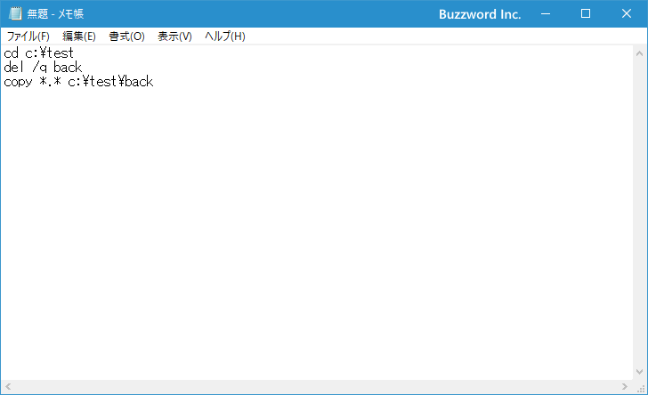
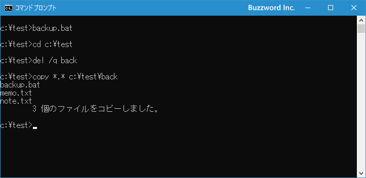

バッチファイルの作成と実行
実行する一覧のコマンドを記述したファイルがバッチファイルです。ここではバッチファイルの作成方法と、作成したバッチファイルを実行する方法について解説します。
バッチファイルを作成する
特定のディレクトリにあるファイルのバックアップを行うという一連の作業を考えてみます。例えば c:\test へ移動し、サブディレクトリの back ディレクトリの中のファイルを削除したあと、カレントディレクトリにあるファイルをすべて back ディレクトリへコピーする、といったことを行うには次のように実行します。
cd c:\test
del /q back
copy *.* c:\test\back
1回だけの作業であればいいのですが、毎日一回同じ作業を行うような場合、バッチファイルを使用すると便利です。バッチファイルは実行したいコマンドをファイルに記述して保存したもので、バッチファイルを実行するとファイルに記述されたコマンドを上から順に実行してくれます。
バッチファイルを作成するにはメモ帳などのテキストエディタを起動し、実行したいコマンドを順に記述していってください。先ほどのコマンドを実行するのであれば次のように記述します。

作成したテキストファイルを保存します。バッチファイルとして保存する場合はファイルの拡張子を .bat で保存します。
バッチファイル名.bat
またバッチファイルの拡張子として .com も同じように使用することができます。
バッチファイル名.com
.bat と .com の違いは、.bat がWindows95など古いOSの頃から使用できますが、.com はWindowsNT系と呼ばれるOS(Windows10など)でのみ使用できます。現在のOSではどちらでも利用できますし、どちらを使って大きな違いはありませんので、これ以降ではバッチファイルの拡張子として .bat を使用します。
今回はファイル名 backup.bat として c:\test ディレクトリに保存しました。バッチファイルの作成はこれで完了です。
バッチファイルを実行する
バッチファイルを実行するには、バッチファイルが置かれているディレクトリで バッチファイル名.bat または バッチファイル名 と実行してください。先程作成したバッチファイルを実行する場合は backup.bat または backup と実行してください。
backup
backup.bat
バッチファイルに記述した3つのコマンドが順に実行されました。

-- --
バッチファイルはこのようにいくつかのコマンドの実行を繰り返し行いたい場合に便利です。バッチファイルには繰り返し処理や条件分岐を記述してより複雑な処理を行わせることもできます。詳しい使い方は次のページ以降で解説します。
( Written by Tatsuo Ikura )

著者 / TATSUO IKURA
初心者～中級者の方を対象としたプログラミング方法や開発環境の構築の解説を行うサイトの運営を行っています。